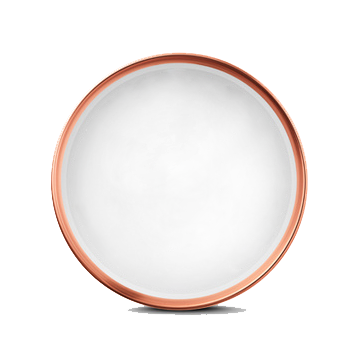

<!DOCTYPE html>
<html lang="en">
<head>
	<meta charset="UTF-8">
	<title>时钟</title>
	<style>
		
		.box{
			z-index: -1;
			width: 600px;
			height: 600px;
			background: url(bg.png) no-repeat 234px 145px;
		}
		#canvas{
			position: absolute;
			margin: auto;
			left: 0;
			right: 0;
			bottom: 0;
			top: 0;
		}
	</style>
</head>
<body>
<div class="box">
	<canvas id="canvas" width="600" height="600"></canvas>
	<!--  -->
</div>
	
</body>
<script>
	var canvas = document.querySelector('#canvas');
	var ctx = canvas.getContext( '2d' );
	var r = function(deg){
		return Math.PI/180*deg;
	}
 
 /*var draw = function(){
 	var img = document.querySelector('#img');
 	window.onload = function(){


 		ctx.save();
 		ctx.translate(120,120);
 		ctx.beginPath();
 		var ptrn = ctx.createPattern(img,'no-repeat');
 		ctx.fillStyle = ptrn;
 		ctx.fillRect(0,0,360,360);
 		ctx.closePath();
 		ctx.restore();
 	}

 }*/
 var drawClock = function(){
 	ctx.clearRect( 0,0,600,600 );
 /*draw();*/
 	ctx.save();
 	ctx.translate( 300,300 );

    //画表盘
   

    //画刻度
    ctx.save();
    ctx.beginPath();
    for( var i=0; i<60; i++ ){
    	if( i%5 === 0 ){
    		ctx.moveTo( 0,-105 );
    	ctx.lineTo( 0,-107 );
    	ctx.moveTo(0,-105);
    	ctx.arc(0,-105,2,0,r(360));
    	ctx.fill();
    	}
    	ctx.rotate( r(6) );
    	ctx.moveTo( 0,-105 );
    	ctx.lineTo( 0,-107 );
    	ctx.moveTo(0,-105);
    	ctx.arc(0,-105,0.5,0,r(360));
    	ctx.fill();
    }
    ctx.moveTo(0,5);
    ctx.lineWidth = 3;
    ctx.arc( 0,0,5,0,r(360));
    ctx.stroke();
    ctx.closePath();
    ctx.restore();
    
    //画指针

    var now = new Date();
    var mi = now.getMilliseconds();
    var h = now.getHours();
    var m = now.getMinutes();
    var s = now.getSeconds();
    //秒针
    var second = ( s * 1000 + mi ) / 60000 * 360;
    ctx.save();
    ctx.rotate( r(second));
    ctx.beginPath();
     ctx.lineWidth = 2;
    ctx.lineCap = 'round';
    ctx.moveTo( -2,5 );
    ctx.lineTo( 2,5 );
    ctx.lineTo( 0,25 );

 
    ctx.moveTo(-2,-5);
    ctx.lineTo(2,-5);
    ctx.lineTo(0,-90);
    ctx.fill();
    ctx.stroke();
    ctx.closePath();
    ctx.restore();
    
    // 分针
    var m = now.getMinutes();
    var s = now.getSeconds();
    var minute = ( (m * 60 + s ) * 1000 + mi ) / 3600000 * 360;
   ctx.save();
    ctx.rotate( r(minute));
    ctx.beginPath();
     ctx.lineWidth = 2;
    ctx.lineCap = 'round';
    ctx.moveTo( -2,5 );
    ctx.lineTo( 2,5 );
    ctx.lineTo( 0,25 );
    /*ctx.arc( 0,0,6,0,r(360));*/

 
    ctx.moveTo(-2,-5);
    ctx.lineTo(2,-5);
    ctx.lineTo(0,-70);
    ctx.fill();
    ctx.stroke();
    ctx.closePath();
    ctx.restore();
    
    // 时针

    var hour = ((h * 60 * 60 + m * 60 + s ) * 1000 + mi) / ( 3600000 * 12 ) * 360;
   ctx.save();
    ctx.rotate( r(hour));
    ctx.beginPath();
     ctx.lineWidth = 2;
    ctx.lineCap = 'round';
    ctx.moveTo( -2,5 );
    ctx.lineTo( 2,5 );
    ctx.lineTo( 0,25 );
    /*ctx.arc( 0,0,6,0,r(360));*/

 
    ctx.moveTo(-2,-5);
    ctx.lineTo(2,-5);
    ctx.lineTo(0,-50);
    ctx.fill();
    ctx.stroke();
    ctx.closePath();
    ctx.restore();

    ctx.font = "15px Arial";
    ctx.fillText('DJY.CLOCK',-40,50);
 
    ctx.font = "13px Arial";
    var date = now.getDate();
    var year = now.getFullYear();
    var month = now.getMonth() + 1; 
    ctx.fillText(year + '.' + month + '.' + date,-27,70);

    ctx.restore();
}

drawClock();
setInterval(drawClock,12);


</script>
</html>